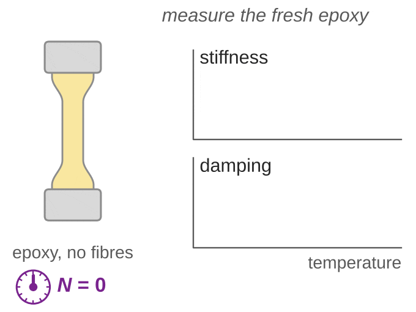

The epoxy on its own
First I took the epoxy without any fibres and loaded it over and over. Compared with fresh, unloaded epoxy, its stiffness and damping had not changed measurably. They depend on temperature and loading rate, not on how many cycles the epoxy has been through.